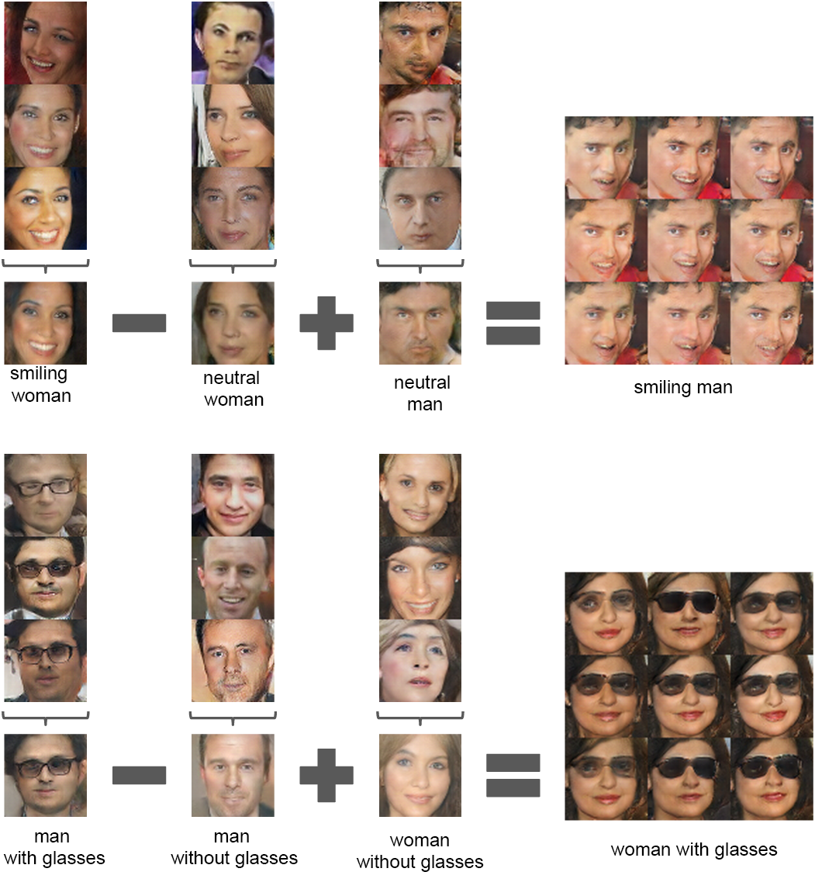
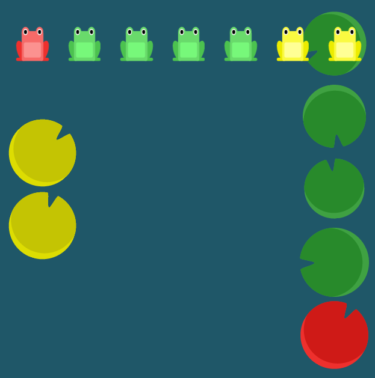

Hello World
CodeTengu Weekly 碼天狗週刊
CodeTengu Weekly 會在 GMT+8 時區的每個禮拜一早上 10:00 出刊，每一期會從目前的 curator 名單中選出三位來負責當期的內容，每一位 curator 各自負責不同的領域，如果你在這一期沒有看到自已感興趣的東西，說不定下一期就會有了。
你也可以瀏覽一下前幾期的內容，有價值的東西是不會過時的。
以下是目前的 curator 陣容：
- @vinta - I failed the Turing Test - 無法通過圖靈測試的程序員
- @saiday - Imnotyourson - 捷運飲食推廣委員會
- @tzangms - Oceanic / 人生海海 - 泰國不得了
- @fukuball - ImFukuball - 最近交了一個很正的女朋友，大家都很生氣
- @wancw - 求職中的 Full-stack Developer，意者內洽
- @adamp33 - 看棒球才是正職，副業是前端工程師。 Pinkoi 徵才中
- @mingderwang
- @kako0507 - 熱愛嘗試新事物的前端工程師
大家也可以 follow 一下 CodeTengu 的 Facebook 和 Twitter，有很多 Weekly 看不到的內容。有任何建議或疑問也可以來 Gitter 聊一聊，歡迎亂入 👺
 @saiday
@saiday
Become a Better Engineer Through Writing
作者認為透過各種形式的寫作可以讓你成為一個更好的工程師。分別是 Personal Journal, Question & Answer Forums, Blogging, Technical Tutorials。後面兩個比較有趣，寫部落格跟寫教學。
寫教學、經營部落格除了增進自己的技術能力以外，培養溝通能力跟當一個帶領者的角色也是她認為一個好的工程師需要具備的要素。然後寫著寫著你就可能會被邀請去研討會，認識更多的人，諸如此類。最重要的一點是，你不需要很厲害才可以開始寫部落格。
有一點很重要卻好像沒提到，有部落格可以很大程度增加你換好工作的機會，無論是人家自己找的或是放在履歷表裡。
不只是個人可以寫部落格，公司也應該要有自己的技術部落格，除了分享之外還可以讓這間公司在技術圈有知名度因此就可以找到更好的同事。同事真的很重要啊！
其實，大家也可以考慮來加入 CodeTengu 嘛！
The introduction to Reactive Programming you've been missing
因為 Reactive Programming 實在太潮了，感覺無時無刻都會聽到人家在談論：
- 這個可以使用 Reactive Programming 的方式來處理
- 如果要說什麼時候開始覺得自己很陌生，大概是在我學會 Functional Reactive Programming 之後吧
- 我們必須使用 MVVM 模式，所以我們得開始 Reactive Programming
到底為什麼 Reactive 說一說都會開始扯到 Functional 及 MVVM？如果你有這些疑問的話，雖然這篇文裡沒有解答，但是理解了 Reactive Programming 之後就什麼都明白了。這篇真的寫得很好！
註：雖然它最後是以 RxJS 當工具來示範，但是就算不懂 JavaScript 也能看懂。
ReactiveX/RxSwift
ReactiveX 九月推出 RxSwift 之後立刻在社群獲得大量的關注，大概是因為 Reactive Extension 這套框架的簡潔及強大吧，不過也可能是不少人都同時開發 iOS 跟 Android 也都導入 Reactive 框架，經常在 ReactiveCocoa 跟 RxJava 之間用錯語法。
ReactiveX is a library for composing asynchronous and event-based programs by using observable sequences.
在大家熟悉的 ReactiveCocoa README 中有一節 How does ReactiveCocoa relate to Rx? 特別說明了 ReactiveCocoa 跟 Rx 之間的糾葛與為什麼 ReactiveCocoa 認為他們還是比較適合 Objc / Swift 開發者。
如果你要體驗感受 RxSwift，可以 clone repository 下來，開啟 Rx.playground，這個 playground 編寫地很認真。
[Android] Reactive Extensions: Beyond the Basics - YouTube Video
CodeTengu 之前提過兩次 RxJava，如果你錯過的話，@wancw 跟我在 #10 #12 分別介紹了：
這兩篇都適合概覽跟入門，而當你導入 RxJava 之後就會遇到一些現實的問題，比如說我們是採用 Retrofit + RxJava 來實作 API Client，每個 Retrofit 派發出來的 request observable 都得重複寫 .subscribeOn(..).observeOn(..) 嗎？我的 subscription 會不會造成 memory leak？這兩個問題我是在這個影片中豁然開朗的。
繼續列一些不錯的 RxJava 入門介紹：
Automating Your Daily iOS Developer Tasks, with Felix Krause - Video
fastlane 是一套非常成功的 iOS 自動化建置部署工具集，無論是 testing, building, 還是 beta / release process 都可以透過它來完成。如果你平常的開發流程中有 CI server，那麼 fastlane 就超好用的。如果平常有要自己截圖更新到 App Store 的需求，花一點時間設定一下 snapshot, frameit, deliver， 無論有沒有 CI server 都可以省下很多時間在做重複的事情。
其實貼這篇除了介紹 fastlane 之外，我主要是有個問題想問大家，有沒有人用 Travis CI 在 Xcode 7.0.1+ 的 image 會因為 pods file not found build 不過的啊 (Xcode 7.0 可以)，我卡了一個月了，好煩！
 @fukuball
@fukuball
TensorFlow - Google 開源機器學習系統
最近 Google 宣佈 將其最新的機器學習技術 TensorFlow 以開放源碼專案釋出，稍微看了一下文件覺得如果真的都可以用那還蠻屌的！大概玩了一下 Get Start 的範例，內容就是餵進去許多 2 維的點，然後再利用 TensorFlow 算出能夠代表這些點的線性方程式是什麼，當然範例很正確地算出答案了，不過我再進一步看其他 Tutorials 時卻發現很多地方寫得不是很清楚，所以跑不太起來，可能剛開源，文件還不齊全吧～未來可以期待一下！

Unsupervised Representation Learning with Deep Convolutional Generative Adversarial Networks
這個機器學習演算法好強，但我實在看不懂核心怎麼做，只知道結果很神奇，比如給右臉及左臉的照片，它會自動產生右臉轉到左臉之間的所有圖片，另外一個例子是，給男生有戴眼鏡的圖減掉男生沒戴眼鏡的圖加上女生沒戴眼鏡的圖，就可以產生女生有戴眼鏡的圖，這.... 太強了... 有沒有強者能夠說明一下怎麼做到的～
林軒田教授機器學習基石 Machine Learning Foundations 第七講學習筆記
在第六講我們可以知道 Break Point 的出現可以大大限縮假設集合成長函數，而這個成長函數的上界是 B(N, k)，且可推導出 B(N, k) 是一個多項式，經過一些轉換與推導我們可以把無限的假設集合代換成有限的假設集合，這個上界我們就稱之為 VC Bond。因此可以從數學理論中得知 2D perceptrons 是可以從數據中得到學習效果，而且也不會有 Ein 與 Eout 誤差過大的情況發生，而這一講將進一步說明 VC Bond。
PHP Versions Stats 2015 Edition - PHP 版本現況 2015
2015 年要結束了，PHP 7 也在今年年底與大家見面了，讓我們來瞧瞧 @Jordi Boggiano 整理更新的 PHP 各版本目前的使用比例現況吧～
Managing Cronjobs with Laravel - 如何在 Laravel 中管理 Cronjobs
開發一個應用程式或服務，一定會遇到需要重複呼叫執行程式處理某些工作的時候，比如寄信、定時清除資料、轉檔等等，在 unix-like 的系統我們就會使用 cron job 來完成這樣的功能。但單純使用系統的 cron job 可能會在日後造成維護的困難，本篇文章將說明如何在 Laravel 正確的管理 cron job。
@adamp33
bliss.js
前端大師同時也是 CSS Secret 一書的作者 Lea Verou 最近推出一套輕量級的 JavaScript 函式庫，取名為 bliss.js，壓縮後只有不到 3KB，相當適合手機版網頁或是講求效能的專案使用。大量使用 Promise，因此寫法比起 vanilla.js 更為簡潔，不妨試用看看。

用遊戲來學 CSS Flexbox
強大的排版工具 Flexbox 可說是 CSS 中最難學會的一種特性（property），不僅有容器和子元素特殊的用法，許多語法也不直覺。
如今有人將此作成青蛙遊戲，透過互動的方式學習，很快就能上手。你多快能學會並且破關呢？
如何讓 CSS box-shadow 的動畫更為順暢？
如果你有使用 box-shadow 做過 CSS 動畫（例如在滑鼠移過時出現陰影、捲軸滾動），一定會遇到效能問題，box-shadow 的繪製成本相當高，要如何做出順暢的陰影動畫，這裡有一招你一定要學起來。
 @kako0507
@kako0507
Microsoft 將在下月開源 Edge瀏覽器的 JavaScript 核心
Microsoft 真的不一樣了！ 打算在下月開源自家瀏覽器 Edge 核心 ChakraCore， 從 Kangax ES6 Compatibility Table 可以看出， Edge 13 是目前支援最多 ECMAScript 6 新特性的瀏覽器，並已實作 ECMAScript 7 的 Async Functions 和 SIMD (Single Instruction Multiple Data)
目前微軟除了將 ChakraCore 用在瀏覽器上，也包含 XBOX、Windows Phone，以及自家服務，像是 Azure DocumentDB ， Cortana數位語音助理 與 Outlook.com ， 一般使用者也可在 Windows IoT 上直接運行 Node.js 擁有的生態系。
微軟希望藉此讓 ChakraCore 更廣泛應用在各個領域，將來 Node 的開發者可以有除了 v8 核心以外的選擇。
HTTP/2 101 (Chrome Dev Summit 2015)
現在大部分使用者的網路頻寬已經非常快速，但是因為 HTTP/1.1 每個 request 都需佔用一個 TCP 連線，在 Ajax 頻繁的網頁速度常常還是需要數秒的讀取時間，而前端工程師為了加快速度做了很多 hacks (CSS Image Sprites, Concatenation/Minifization, Inline CSS, Data URI), HTTP/2 透過同一個 TCP 連線處理所有 request ，來加快網頁的速度，並且完全不用更改原本前後端的 code ，只要 server 和 client 都有支援 HTTP/2 即可對網站讀取速度最佳化 。
影片中會介紹 HTTP 的歷史，可以簡單的理解 HTTP/2 的特性，在 HTTP/2 ， 因為 request 變得輕盈，原先習慣的一些最佳化方式反而變得不合用，看來前端工程師很快的又要學習新的方式 coding 了。
開源免費 SSL 憑證 Let's Encrypt 正式進入開放測試
Let's Encrypt 希望藉由免費且簡單自動化申請的方式，加速推動 HTTPS 加密傳輸。由於使用的是 DV 驗證，只會驗證 Domain 的所有權，並不會驗證所有者的身份，不過如果只是架個個人網站， Let's Encrypt 就會是一個很棒的選擇！
Getting Started with Redux
Redux 作者最近在 egghead.io 開放了免費課程， Redux 是給 JavaScript app 使用的 state container ， 改善了 Flux 架構，將所有資料流和 Event Handling 都包起來，減少了大量手動書寫。
因為採用了 immutable data 以及 SSOT (Single Source of Truth) ，資料可以非常容易的達到 time travel ，方便追蹤資料的改變，是一個值得去玩玩的 framework 。
聯發科推出 MediaTek LinkIt™ Smart 7688
最近聯發科的 MediaTek Lab 推出了新的開發版 LinkIt™ Smart 7688 ，內建包好 Node.js 與 Python ，分為兩個版本，LinkIt™ Smart 7688 (MPU) 與 LinkIt™ Smart 7688 (MPU + MCU) 各只要 $13 與 $16 ，且這次除了 driver (聽說之後會釋出) 外完全開源！自己也跟了團購訂了一組準備來玩玩！
Random Cool Stuff
Is it Pokémon or Big Data? - 這是神奇寶貝或是大數據？
這是一個謎題小遊戲，每次給出一個名詞讓你猜這這是神奇寶貝或是大數據？作者會做這個小遊戲的原因應該是因為現在太多大數據的服務或工具命名實在是太像神奇寶貝了，比如 Seahorse 跟 Horsea 哪一個是大數據呢？真的好難啊！
由 @fukuball 提供